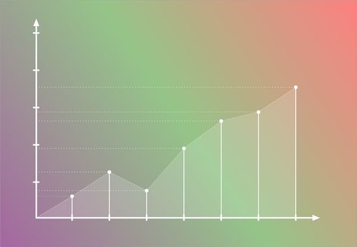

computer-architecture 5.3 The Basics of Caches The Basics of Caches Questions 데이터가 존재하는지 어떻게 확인? 우리가 어디를 보고 어디에 넣어? Directed-mapped Fully associative M-way Set associative Directive Mapped Cache 위치가 주소에 의해 결정됨 나머지 연산을 이용해 캐시 주소 결정
computer-architecture 5.2 Memory Technologies Memory Technologies (시간이 급한 관계로 몇 가지만 추려서 정리했습니다.) Memory Technology 대표적인 메모리의 종류는 아래와 같다. Static RAM(SRAM) Dynamic RAM(DRAM) Magnetic Disk SRAM -> DRAM -> Magnetic Disk로 갈수록
computer-architecture 5.1 Introduction Introduction (시간이 급한 관계로 몇 가지만 추려서 정리했습니다.) Principle of Locality 프로그램은 한 번에 작은 비율의 주소 공간에 접근한다. 그래서 다시 접근할 확률이 높은 것들에 대한 원칙을 정의하여 효율적으로 공간을 사용하는 것이 좋다.
probability-and-statistics 3.4 Conditioning on Event Conditioning on Event 여기도 역시 Conditioning, 어떤 Event가 발생했을 때의 상황을 고려한 확률을 생각해볼 수 있다. 어떤 Event A가 발생한 조건에서 Continuous Random Variable $ X $의 PDF는 다음을 만족한다. $$ P(X\in B
probability-and-statistics 3.3 Normal Random Variables Normal Random Variable Normal Random Variable의 PDF 그래프는 고등학교 때 한번쯤 봤을 법한 정규분포곡선이다. $$ f_X(x) = \frac{1}{\sqrt{2\pi}\sigma}e^{-(x-\mu)^2/2\sigma^2} $$ $$ E[X]
probability-and-statistics 3.2 Cumulative Distribution Functions Cumulative Distribution Functions 연속적인 값에 대해, 우리는 $ P(X=x) $ 보다는 $ P(X \le x) $에 더 관심을 가지고 있다. PDF를 적분하면 그 값을 구할 수 있지만 $ f(x) = P(X \le x)
probability-and-statistics 3.1 Continuous Random Variables and PDFs Continuous Random Variables and PDFs 지금까지 우리는 이산적인 값에 대한 확률을 다루었다. 여기서는 연속적인 값에 대한 새로운 Random Variable과 Probability Density Function(PDF)를 소개하겠다. Continuous Random Variables Continuous Random Variable은 연속적인 값을
probability-and-statistics 2.7 Independence Independence Random Variable 간의 독립인 경우에 대해 다루며, 이 때 PMF, Expectation, Variance가 어떤 특성을 지니는지도 함께 살펴볼 것이다. Independence of Random Variables 두 랜덤 변수 $ X, Y $가 독립이려면 PMF가 다음을 만족해야
probability-and-statistics 2.6 Conditioning Conditioning 이 부분의 내용은 Random Variable에 조건부 확률 개념을 더하는 것이라고 생각하면 된다. 그에 따른 PMF, Expectation의 변화를 알아보자. Conditioning on Random Variable on an Event 어떤 Event $ A $가 발생했을 때, Random
probability-and-statistics 2.4 Expectation, Mean, and Variance & 2.5 Joint PMFs of Multiple Expectation, Mean, and Variance 여기서는 예전에 설명했던 Random Variable의 종류들에 대한 Expectation과 Variance가 어떻게 되는지만 간단하게 말해줄 것이다. 단, 증명은 단순히 전개하면 알 수 있으므로 생략한다. Expectations of Standard Random Variables Discrete Uniform
 probability-and-statistics 2.3 Functions of Random Variables & 2.4 Expectation, Mean, and Variance Functions of Random Variables 여기서는 Random Variable이 값이 아닌 함수로 정의되는 경우에 대해 이야기한다. Random Variable $ X $와 $ f : \mathbb{R} \rightarrow \mathbb{R} $인 함수 $ f $가 있다고 하자. 그리고 새로운 Random
probability-and-statistics 2.1 Basic Concepts & 2.2 Probability Mass Function 2장의 전체적인 내용은 Discrete Random Variable에 관한 것이다. 이 포스팅에서는 Random Variable과 Probability Mass Function(PMF)이 무엇인지에 대해 설명한다. Basic Concepts Random Variable 정의를 그대로 읽어보자면, Random Variable이란 Sample Space를 실수에 매핑하는
computer-architecture 4.14 Fallacies and Pitfalls Fallacies and Pitfalls Fallacy: Pipeline is easy 지금까지 파이프라인을 잘 이해한 사람들은 어쩌면 이것이 별 거 아니라고 생각할 수도 있다. 그렇지만 지금까지 다룬 것은 파이프라인의 기본적인 개념이고, 더 세부적인 것을 고려하기 시작하면 만만치
computer-architecture 4.7 Data Hazards: Forwarding versus Stalling Data Hazards: Forwarding versus Stalling 지금까지 구현한 회로는 Hazard가 발생하지 않는 상황에서는 잘 동작한다. 하지만 실제 프로그램에서는 Hazard가 많이 발생하기 때문에 이를 처리할 수 있도록 고쳐서 조금 더 현실적인 프로세서를 만들어보자. Forwarding sub
computer-architecture 4.6 Pipelined Datapath and Control Pipelined Datapath and Control 여기서는 4.4장에서 완성했던 기존의 Single-Cycle Datapath를 Pipelined Datapath로 바꾸는 과정을 살펴볼 예정이다. 우선 회로를 아래 다섯 단계로 나누어 표시해보자. IF(Instruction Fetch) ID(Instruction Decode, Register File Read)
computer-architecture 4.5 An Overview of Pipelining(2) An Overview of Pipelining(2) Hazards Hazard란 다음 Instruction을 바로 다음 사이클에서 실행할 수 없도록 하는 상황을 뜻한다. Hazard를 해결하지 못하면 작업을 하지 않는 사이클이 발생해 Pipeline이 느리게 동작한다. Hazard의 종류를 살펴보자. Structure
computer-architecture 4.5 An Overview of Pipelining(1) An Overview of Pipelining(1) 앞서 만든 프로세서 회로는 실제로는 거의 사용되지 않는다. 4.3의 마지막 단락은 다음과 같았다. PC는 State Element이고, 나머지는 Combinational Element이기 때문에 전체 회로를 도는 데에는 1 Clock이 소요(
probability-and-statistics 1.5 Independence Independence Probabilistic Independence 두 사건이 독립이라는 말은 한 사건이 발생하든 말든 다른 사건이 발생할 확률은 변하지 않는다는 것이다. 이를 수식으로 옮기면 다음과 같다. $ P(A\cap{B}) = P(A)P(B) $ 이 식은
probability-and-statistics 1.4 Total Probability Theorem and Bayes' Rule Total Probability Theorem and Bayes' Rule Total Probability Theorem $A_{1}, \cdots, A_{n}$이 $Ω$의 partition이면 Event B에 대해 다음 식이 성립한다. $ P(B) = P(B\vert{A_{1}})P(A_
computer-architecture 4.4 A Simple Implementation Scheme A Simple Implementation Scheme ALU Control MIPS의 ALU는 4 bit Control 입력에 따라 어떤 연산을 할 지 결정한다. ALU Control Function Instruction 예시 0000 AND and 0001 OR or 0010 add lw, sw,
computer-architecture 4.3 Building a Datapath Building a Datapath Datapath란 CPU에서 데이터와 주소를 처리하는 요소들을 말한다. 레지스터, ALU, MUX, 메모리 등이 Datapath라 할 수 있다. 지금부터는 lw, sw, add, sub, and, or, slt, beq, j 총 9가지 명령어를 수행할
computer-architecture 4.2 Logic Design Conventions Logic Design Conventions 여기서는 논리 설계에 대한 기본적인 내용과 Clocking에 대해 설명한다. Logic Design Basics MIPS의 datapath를 구현하는 데 필요한 Logic Element는 크게 두 가지로 나뉜다. Combinational Element 현재 주어진 입력 값에 따라
computer-architecture 4.1 Introduction Introduction 챕터 4에서는 앞에서 배운 내용을 바탕으로 프로세서를 논리회로로 구현하는 법을 다룰 예정이다. 물론, MIPS Instruction set에 있는 모든 명령어를 실행할 수 있는 프로세서가 아닌 조금 더 단순화 된 몇 가지 기본 명령을
probability-and-statistics 1.3 Conditional Probability Conditional Probability Discrete Uniform Probability Law Ω가 유한하고 모든 outcome이 동일한 확률로 나온다면, $ P(A) = \frac{\left\vert A \right\vert}{\left\vert Ω \right\vert} $ (A의 요소 수 / 전체 outcome의 수) =>
probability-and-statistics 1.2 Probabilistic Models Probabilistic Models Experiments and Sample Spaces 정의 Experiment(시행) 가능한 여러 가지 outcome(결과) 중 한 가지를 만들어내는 과정 Sample Space(Ω) 가능한 모든 outcome의 집합 Events 정의 Ω의 부분 집합. 전체 혹은